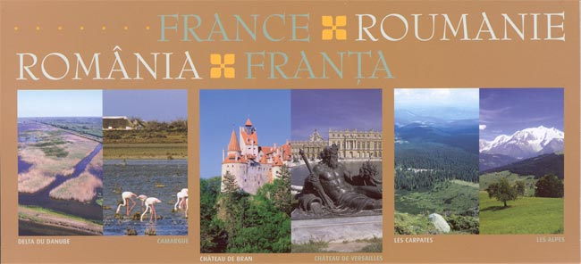
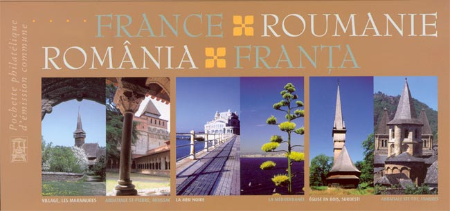
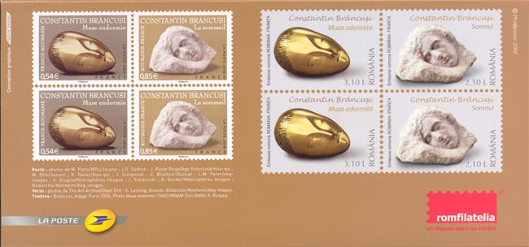
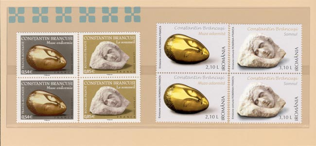
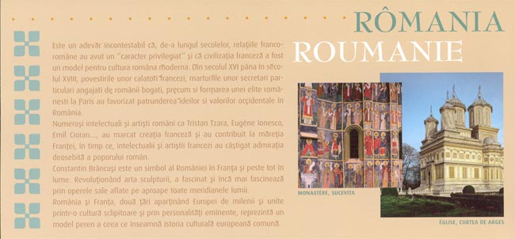
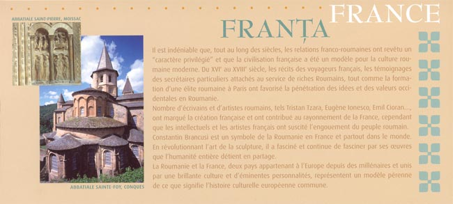
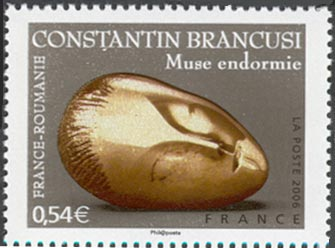
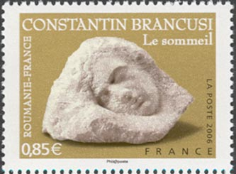
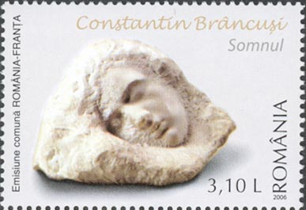

JOINT ISSUE FRANCE - ROMÂNIA
Constantin Brancusi
No doubt, during the centuries the French-Romanian relationship had a "privileged character" and the French civilization was a model for the modern Romanian culture.

Starting by the XVI and till the XVIII century the letters of French travelers, the accounts of the private secretaries who served the reach Romanians, like also the apparition of a Romanian elite in Paris favored the penetration of Western ideas and values in Romania.

Many Romanian writers and artists, like Tristan Tzara, Eugen Ionescu, Emil Cioran..., leaved their marks on the French creation and contributed to the glory of France; meanwhile the French intellectuals and artists gained the admiration of the Romanian people.

Constantin Brancusi is a symbol of Romania in France and worldwide. He revolutionized the art of sculpture, and he is admired everywhere in the world for his great works that belong to the whole humanity.

Romania and France, two European countries bound by a brilliant culture and by great artists, represent a permanent model of a common European culture.

Free translation from Romanian and French of the leaflet text, by the author of this site.

Two stamps were issued in October 2006 by the French postal administration and two by the Romanian Post.


We show above and below large scans of the new stamps. Just to mention that the Romanian post issued in 1967 a stamps displaying the sculpture shown on the right (follow the link below in order to see it). In the meantime its name changed from The Sleeping Muse (which now is the name of the sculpture shown on the left) to The Sleep.

Click on the arrow to learn more about Constantin Brancusi, the stamps dedicated to him and to his works.


| Published:
11/08/2006. Revised:
11/08/06. Copyright © 2006 by Victor Manta, Switzerland. All rights reserved worldwide. |